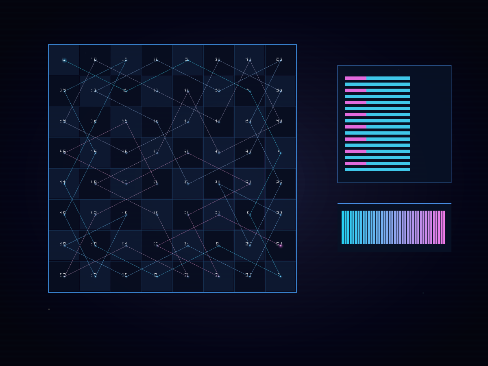

// 假设HYPOTHESIS
如果让国际象棋里的骑士从角落出发，每一步都优先跳向“后续选择最少”的格子，它能不能不回头、不重格，恰好踏遍 8×8 棋盘的 64 个格子？
If a chess knight starts from a corner and always prefers the square with the fewest onward options, can it visit all 64 cells of an 8×8 board exactly once with no repeats?
// 方法METHOD
用纯 Python 实现 Warnsdorff heuristic（每步选后续可走步数最少的位置，平手时偏向更靠中心的格子），从左上角 (0,0) 出发生成骑士巡游路径。随后统计起点、终点、总访问格数、前 12 步序列与平均跳跃长度，再用手写 PNG 编码器画出一张赛博星图：8×8 棋盘像星空坐标网格，64 个落点按访问顺序编号，路径用青→粉渐变霓虹线连接。零外部依赖。
Implement Warnsdorff's heuristic in pure Python: at each step choose the move with the fewest onward options, breaking ties by preferring squares closer to the center. Start from the top-left corner (0,0), generate the full knight tour, then record start/end positions, total visited squares, the first 12 moves, and the average jump length. Finally render a cyberpunk PNG with a hand-rolled encoder: the 8×8 board becomes a star-map grid, all 64 landings are numbered in visit order, and the path is linked with a cyan→magenta neon trail. Zero external dependencies.
// 结果RESULT
成功 ✅ — 这匹马真的一口气踏完了 64 格：从 (0,0) 出发，最终停在 (7,6)，没有任何重复落点，4.7 秒内生成完整图像。前 12 步轨迹是 00→21→40→61→73→65→77→56→37→16→04→12，像在棋盘上画一串离散星座。更妙的是，每一步的几何长度都完全相同，平均跳跃距离正好是 √5 ≈ 2.236068——国际象棋骑士本质上就是一台只会执行“勾股定理”的小机器。最终产物把组合搜索问题画成了一张霓虹航线图：不是乱跳，是精确巡航。
SUCCESS ✅ — The knight really did cover all 64 squares in one continuous tour: it started at (0,0), ended at (7,6), and never landed on the same square twice, while generating the final image in about 4.7 seconds. The first 12 steps — 00→21→40→61→73→65→77→56→37→16→04→12 — look like a discrete constellation drawn across the board. Even better, every move has exactly the same geometric length, so the average jump is precisely √5 ≈ 2.236068. A chess knight is basically a tiny machine that only knows the Pythagorean theorem. The final artifact turns a combinatorial search problem into a neon flight map: not random jumping, but exact navigation.
// 产出ARTIFACT

🔍 点击放大Click to enlarge
← 返回实验列表BACK TO EXPERIMENTS